BY REID WOODBURY, JR.
Published in Speaker Builder magazine FOUR/90 (July/Aug. 1990).
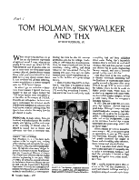
So when I got an invitation to interview Tom Holman, I figured now's my chance to find out what's behind the THX Sound System I met Tom (Photo 1 ) at his office on the campus of USC in Los Angeles. Friendly and soft-spoken, he has a teenager's enthusiasm for technical details and the self-confidence of someone who truly knows what he's talking about. We spent a few minutes discussing how he got started in audio.
PERSONAL. In high school, Tom got involved with school plays. He worked mainly with lighting until his junior year at the University of Illinois (UI) when he shifted to sound, first in theater and television, and then in technical film.
During this time he also did summer production jobs for the college. Graduating in 1968 with a B.S. in communications, he went to work full time for the university; mixing, editing, and doing whatever else was needed. During the ensuing five years Tom says he really learned about sound because he had access to the facilities of a great college library.
“I think it's better than MIT's or Stanford's,” says Tom. “I've looked at audio at all three of them. And, because they (UI) would buy everything I wanted, I was able at that time to read pretty much everything that had been published about audio. Today, that's impossible because there's ten times as much stuff out there. But back then you had to read two shelves full of Audio Engineering Society material, and over a five-year period I pretty much did that.”
Tom spent most of his time working in cinema, eventually concluding that the likelihood of improving film sound quality seemed to be pretty slim. So in 1973, at the age of 26, he went to work for Advent where he felt he could do higher quality work. While there, he worked as an engineer with Andy Petite, the firm's chief speaker designer, as well as with Henry Kloss, the company's founding engineer.
In 1977, Tom left to start his own company, Apt, because, “Advent wasn't in great shape. Although it was a very successful loudspeaker company, their television line ate up all of the loudspeaker profits. I worked mainly in receiver and radio, and on the loudspeakers, a little on the television. I started Apt to make the pre-amp and power-amp, which I did for three years.”
When a chance to work for Lucasfilm came along in 1980, it was just too good an opportunity to pass up. Film sound was improving. Recently, Dolby Labs had greatly enhanced the quality of theater audio by adding noise reduction, stereo format and standardization.
“And it was also a field where things were a little backward. It was pretty easy to make a contribution, because I just used the principles I learned in high fidelity and applied them to film sound,” says Tom.
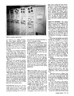
USC has a very complete sound facility with Foley stage, mixing stage, and a large scoring stage with 24-track recorder. The screening room also serves as a lecture hall. Student productions are kept small enough not to need dialogue replacement.
When we went through the machine room (Photo2) of the two film-mixing stages he stopped to assist a student who had accidentally let the dubber reel run past the end. A few minutes later, the dubber was reloaded and work resumed. It was almost time for Tom to go back to work, so we made arrangements to continue the interview later at Skywalker Ranch, home of Lucasfilm, Ltd.
The drive through the wine country just north of San Francisco was mesmerizing. Thick patches of trees dotted the valleys between grass covered hills, with narrow, well maintained roads winding their way through it all. This is highly recommended territory for anyone who likes wine and country drives.
SKYWALKER. Named after Luke Skywalker from the Star Wars series, Skywalker Ranch occupies a sizable chunk of this marvelous landscape. Tom assured me that every building here is brand new, just constructed with different styles, as if over a long span of time.
Having traded in his professor's coat and tie, Tom was casually attired when I pulled up the long driveway. Noting my camera, he said management doesn't like pictures to be taken because they are afraid of a photo being misused by one of the scandal sheets. But he added that he would let me know when it was safe to take a few shots.
The centerpiece of the ranch is a lake gravity-fed by seven wells in the hills, creating a reservoir for fire fighting. That's important because the ranch is far from town, and those beautiful grassy hills get very dry and brown in summer. The ranch has its own fire department that is also part of the security department. These personnel are also trained paramedics.
TECH BUILDING. One of the more obvious structures is the Tech Building, devoted entirely to post-production. This first segment of the winery-shaped structure contains two edit/mix suites, back-to-back and mirror-imaged. Each has 11 editing rooms, a pre-mix room, a final mix room and machine and control rooms. Thus editors and mixers are brought close together. The rest of the building houses support people.
“The sound studios are set at the points of a star in order to separate them from one another, conceptually,” said Tom. “And the center of the star is a set of technical rooms with heavier floor loads, more cooling and more power. The idea is that technology today—or in the future—is likely to be concentrated in a form where you need to take care of some high tech equipment with heavy power, heating and cooling requirements. And then your sound editors are going to be separated from the equipment, not like the Movieola, where they're physically working on stuff. So that's why there's a central, heavy duty area.”
MILES OF DUBBERS. “The editing suites are set up conventionally for two editors” continued Tom. “These are the simplest rooms with just benches and mag readers, squawk-box-type deals. But there are hidden troughs under the floor in order to run any amount of high tech fiber optic or what have you. Each room has its own thermostat and air volume control because you're likely to have different technologies in different rooms.
“In the final mix machine room all the dubbers are centralized in the central core, but the recorders for a room are located here,” Tom continued. “There can be a lot of debate on which place you want to have them. It wound up that you want a machine-room operator here and you want your masters here. The central core basically is miles and miles of dubbers—about 600; you switch them to whatever room you need. There are about 600 channels of Dolby SR (Spectral Recording)in the building. I think we're the largest single customer forDolby.
“Patching for 24 tracks at a time, plus cross patching. You could patch up, basically, your normals with that scheme. It's Magnotek equipment, thoroughly aligned with this ‘tweak cart’ that we built with a Bradford audio noise meter that goes down to 0.1dB calibrations. And we use those tenths,” says Tom. “Alignment is done for every reel. With 35mm film, a reel is about ten minutes long.
“And it has a spectrum analyzer, tones or pink noise. You can choose to azimuth from any pair of channels you like. The tweak cart is also connected in 24-tracks at a time to do everything, including Dolby levels.
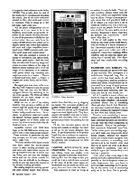
“All the patch configurations are on floppies, so if you want to be in the Academy mono mode you press the ‘A’ button on the console and load this disk. It puts all the processes available into the correct order. Here are cards from the Dolby CP-200 (Photo 4.) to which we've added a carrier card which does differential input and output amplifiers here—input amps, 100dB common mode rejection input amps and output amps.”
The rack also contains a number of things for simulation, like optical clash, dirt noise, grain noise. “And this (unit also) simulates the frequency range and octave-to-octave balance of the range of different sound systems: A4s, THX full range, or A4 equalized, or A4 unequalized—pretty much any condition you might encounter in a theater ... there's a background-noise adder, a clipper, a clipper per octave band, and so forth,” he said.
“The signal goes from there to the room EQ, the THX crossovers, and the power amps. They can also mix for IMAX equipped theaters by switching in the top center speaker. The THX and IMAX systems are the same except for the added channel in IMAX.”
While we are in one of the mixing theaters, Tom presses a button on the console and the sound of air conditioning rumble can be heard. “Average theater background noise level,” he explains, “so you know what you're working against. Footage counter and level meters appear out of black under the screen, by virtue of scrim cloth—the old theatrical trick, scrim.”
Lucasfilm worked with Solid State Logic on the SSL 5000 series mixing console to turn it into a film sound console. “These modules, in particular the panning modules, are the most complicated ones,” adds Tom.
“We have another little input console over here called the mix-in-context mixer. It takes existing pre-mixes and puts them onto main busses, so you can put up whatever you like. If you're mixing Foley, you can run the dialogue tracks and use the whole console for Foley. You can still add in the dialogue tracks, so you can mix in the context of the already existing pre-mixes.”
The mixing stages are nothing special, just good mixing stages. Tom demonstrated how dead they are by clapping his hands. The surround speakers are hidden behind scrim panels, 14 in all. The rooms are also set up for the power requirements of digital audio. They have massive air handlers that take in water, chilled and circulated from an underground plant below the parking lot out back.
Of the two one-man spaces, one is being used mainly for storage; the other is set up for the sound designer, Ben Burtt. To get the projection to the proper length they use a periscope arrangement. The screen has adjustable masking for the different film formats and the extra IMAX speaker.
LAWYERS, ACCOUNTANTS, AND ENGINEERS.“The second floor also has editing rooms and smaller work rooms, and also a room that looks down, balcony-like, into the stage so that you could use it as a control room to record in the stage. If all the other stages are booked and you just need one effect, just go up there and run a mike line down.”
Tom continued to point out things as we walked through the halls. “There are eight overflow editing rooms here for each floor, which are apparently being used as offices. George's (Lucas) philosophy about that is if you don't build a lot of offices you won't have a lot of overhead, because you won't have any place to put the people. So don't build a lot of offices. He once said to me in a meeting, ‘Engineers: I know what they do. Lawyers and accountants: I don't know what they do.’”
A lot of odd angles in the Tech Building help break up the work spaces, with no feeling of a sterile business office. One section is made to look as if an exterior space were roofed over with a skylight to connect two buildings. Office windows look out onto this space, providing lots of natural light. Very European, and very comfortable, according to Tom.
TRANSFERS AND LIBRARY. The transfer room has just about every kind of tape machine. The centerpiece is a multi-format Magnotek mag film recorder that has head stacks for all track configurations and film guides for 16mm and 35mm. Sound effects can be processed by an array of signal processing devices, including an old Burwen single-ended noise reduction unit. The room also has its own tweak cart.
All of Lucasfilm's sound effects are stored on 15ips tape, using Dolby A or SR-type noise reduction. This is an unpublished library, but is something clients get when they do their films here. An even more restricted library, not on the shelf, contains the signature sounds for StarWars and Indiana Jones.
Transfer room monitoring is accomplished with standard LCRS (left, center, right, surround)speakers and encoder so you can really tell what's happening on four-channel. “One of the problems I find common in Hollywood,” says Tom, “is that unless you're in a dubbing stage, you can't make any judgements about sound quality, because the transfer rooms are usually badly equipped with old Altec monitors, or something. And operators sit in the transfer room, and they try to figure out what to do about the rumble or something. They can't really do a good job because they're not hearing it properly.
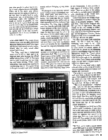
ADR AND FOLEY. The rooms I most wanted to see were the ADR (Automated Dialogue Replacement) and Foley stages (all the non-vocal sounds an actor makes, named after an early sound editor named Jack Foley).
The Foley stage has a background noise level of NC 5. They had to extrapolate that value because the official tables only go down to NC 15. The room was so quiet I could hear my ears ringing and blood flowing. When I mentioned this, Tom assured me that the air conditioning was on. Very quiet. It has to be quiet enough to get quiet clothing sounds without bringing up any room noise.
We stomped on the different “special noise” surfaces such as wood floor, concrete, metal grate, and there's also a shallow depression for creating water noises. The room also has an outside door for bringing in cars, and is made as dead as possible with four inches of fuzz everywhere. The Foley stage is slightly more live than the screening room (see below) because of the extra surfaces.
The ADR stage is similar to the Foley stage. It's just big enough for a 6 x 14 foot screen. It's furnished with a stool, script stand, headphones and microphone. And it has another nice touch: a window to the outside world. The control room has a very basic one-channel mixer and monitor for the replacement line and the original production sound.
BIG SPACES. The scoring stage was booked, so we only got to see it from an observation deck. This is one of the two largest spaces at the facility, more than large enough for a full orchestra. The stage walls and ceiling are made from massive semi-cylindrical cast-concrete forms. This gives the room avery long reverb time with very diffuse reverberation over a wide frequency range, even at low frequencies. It also provides a high degree of isolation from outside noise. There are pockets in the ceiling and walls for movable panels that allow wide adjustment of the reverb time, from 0.7 seconds to 3.5 seconds.
I asked Tom about the trouble of getting contractors to correctly follow the plans of an acoustic designer. “Well,” said Tom, “Ted Schultz designed this. He's got lots of experience. He's just retired, in fact. He worked at BB&N (Bolt, Beranek & Newman) forever, and then went off on his own about ten years ago. He did Baltimore, Toronto, Davies Symphony Hal, some in Australia, some in Europe, all over the place.”
The other large space is the screening room. “So, this is what we think a screening room ought to be,” Tom noted. “It's fairly shallow for its width. In other words, it's almost square. It starts with the picture as the beginning point for determining what the ratio of dimensions should be. There's about equal masking all around. That tells you what the height ought to be, and depth for a certain room volume and listening angle. It's not really a theater space, it really is a cinema space.”
The room is very dead with a slight echo off of the screen. It has five main channel speakers in the new format and hidden split surrounds.
The projector was made in the 1950s and came from a theater in San Francisco. Tom pointed out the flutter idlers for 70mm are very well damped, and very difficult to turn. The film is moving quite fast, 112fpm or 22.5ips.
“This is an old projector,” observed Tom. “And it's still the best available dual-gauge projector. Well, it's been repainted, but basically projection is not a new issue. It was well faced in the past. Now we do have, for example, much better heads than they had in the past: six-track Teccon—an awfully good head compared to what they had in the 50s. The booth also has all the standard sound equipment.”
As we completed our brief tour of the ranch's audio installation, I was more than a little impressed. It's quite a place, and it was truly gratifying to see a facility where no expense was spared to do things right. But now it was time to sit down with Tom and get the story on the THX sound system. Here's what he had to say:
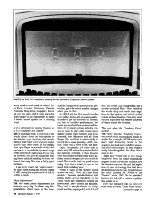
Is it a refinement for existing theaters, or is it a completely new system?
TH: It's actually both. If you look at the whole chain—from the microphone to the listener—you could say that certain parts of that chain were of much higher quality than other parts. If you simply tune up a Nagra (a portable reel-to-reel) and use it, it exceeds the dynamic range of the sources it's capturing. If you tune up dubbers, and you do things like adding better azimuth stability to them, we found that mag film was a fairly good medium.
It has to be what I call “super tuned.” By that I mean tuning the level to within 0.1dB, tuning the equalization at 10k to within a tenth.
Phase adjustments?
TH: We make phase adjustments for azimuth every day. So those mag film generations which were, at the time, audible changes from generation to generation, get to be much smaller changes when you do that.
In 1980 I felt the film sound consoles were rather backward in sound quality. In order to get the features you needed, you had to sacrifice performance, because you needed these customized features. So we chose a music industry console in order to start with a basic good quality sound, high isolation and (low) crosstalk, low distortion and all those things. We modified it substantially to turn it into a quad panning, LCRS, console. That was a Neve 8108, our first.
Later, fortunately, we were able to work with SSL when they started building modular consoles. It then became clear that all they needed were a few different module designs and you could do a real film console that's as good as any today. And that's what's in use at the ranch tech building now.
When it came to the theater sound system we said, “Well, let's start from scratch,” because standardization had arisen, really, as two standards. In the 1930s when the exhibitors owned the distribution, they owned the theaters. They built a sample theater in Hollywood and they equipped it with 1.5-mil slits, ‘xyz’ screen, ‘xyz’ loudspeaker, and a certain electrical filter. They tuned-up the whole thing and made their negatives for that system, and mixed on that system in those theaters. Then they went out and duplicated that theater hundreds of times across the country.
This was when the “Academy Curve” started?
TH: Partly. But the “Academy Curve” was never really standardized, studio to studio. For example, MGM always put more high frequency boost in the negative and had more rolloff in projection than other people. So they weren't really interchangeable, but they didn't need to be.
Right after World War II, two things happened. First, the justice department stepped in and said studios couldn't own the theaters anymore. Second, this explosion of new technology that had been developed during the war brought about the Altec Lansing A4 “Voice of the Theatre” about 1947. So the standard became the A4 with a certain equalization ahead of it.
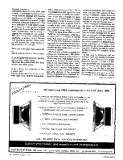
There's one in the small town I used to live in.
TH: It probably has a lot of bric-a-brac.
It has an Egyptian-theme interior, bas-relief sphinxes and a tented ceiling.
TH: Great! But probably fairly live. They weren't very dead spaces.
It was a theater for awhile, but it's now a concert hall.
TH: So no one had ever set out to say what ought to be. “If given a blank slate, here is what you would make.” The A4 was standardized and applied to many auditoriums and dominated the market. Even to this day it accounts for about 80% of the installed base of theater loudspeakers. It has a number of problems that its own designers tried to remedy in the 1960s. They didn't get anywhere because it was so entrenched they couldn't change things.
When we came at it in 1980, we said, “Well look, the performance of this thing is rather poor in a number of known ways. And many people have contributed directly to making improvements in large-scale sound systems over the years. Let's draw on all these experiences and combine the best of them into one comprehensive system.”
The first battle we had in designing the system was room acoustics. We started with Beranek. Our first room measured 70,000 cubic feet, and Beranek says it should have between 0.8 and 0.9 seconds reverb time. Fairly short, but I thought it should be even deader than that for several reasons. Both Acustica (the main European acoustical journal) and JASA (Journal of the Acoustical Society of America) have published a lot about the influence of reverberation time on speech intelligibility and background noise, and how they combine to harm dialogue intelligibility. Here, we are our own worst enemies, because most of the examples are cases of public address systems in noisy reverberant rooms.
Now motion picture theaters are usually quieter and deader than such rooms. But again, we are our own worst competition because we also have sound effects and music, all going on at the same time, competing for dialogue intelligibility. So I wanted to go for the most transparent channel possible. The other factor, seldom operative in Beranek's day, is the widespread use of stereo, where localization of the screen speakers is so important for giving the kind of wonderful directionality that's possible on the screen.
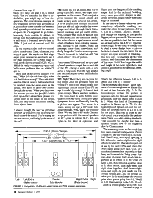
So we wanted it flat, and we wanted a low reverb time. Then, of course, you want it quiet. We made our first stage super quiet because we needed to use it for dual purposes, for a Foley stage as well. So it's down around NC 10, NC 12. Which is really outrageously quiet and led to some problems later on, which I'll get to.
Then look at the screen speaker. You say, “What is it the A4 does right, what is it that it does wrong?” There are some axioms. One of mine is that sound must be emitted from the same space as the screen. We have to shoot (the sound) through the screen. When you shoot over the screen you can see people's heads drift up as they adjust their pinae (external ears) to the angle of the sound field, and they notice this sound coming from above them.
I always thought the way we perceived direction up and down was by turning our heads toward the sound. You're saying we perceive vertical positioning by the shape of the ear?
TH: Right. So, it's an axiom that we're going to put left, center, and right loudspeakers on the screen. That was just a given because the sound effects are made so they seem to be on the screen. A lot of people have thought you could have put left and right outside the screen image and shoot through black transparent masking and get wider stereo. Well, actually that could be kind of nice in the music and the ambience tracks. But when there's a synchronous sound effect of Indiana Jones entering camera-left, moving to the center, when the footsteps come from (elsewhere) suddenly things don't make sense anymore. There's no sense for what we call ‘the effect-effect.’ It's off-picture.
I once rented Silverado and set up a pair of small speakers a couple feet on each side of the TV. During a scene with a card game, a noise came from the right speaker and the card players turned and looked at the speaker.
TH: Right! There they are, in your living room! And the problem with the typical TV case is the image simply isn't big enough. And of course if the TV image is made big enough, it doesn't look good enough. That's another problem.
We went back to some Kodak information from the early 1950s as to grain sharpness, focus, and basically how big a picture can appear. You know, in a home stereo we use a 60° wide field most typically. Well, that's too wide for films. We say that a 50° wide Cinemascope picture with the sound speakers at 45° plus or minus 22.5, left and right—is the kind of optimum seat.
That's how we designed all the dubbing stages. And in the technical building, every room you enter, despite its size, you're always at a place where that same angle is intended.
In the case of a theater where we have completely adjustable masking, we make the other format pictures—2.2-to-1, 1.85-to-1 70mm, 1.85-to-1 35mm—and change the masking so you get the biggest picture you can fit. You can come as close as possible to that. But the rooms are all laid out for the 2.35-to-1 Cinema-scope image. By the way, it's really nice to start a room design from a picture because it means you can leave, for example, an equal amount of masking—like two feet—all the way around, and that forms the dimensions of the room. Voila! You've got the width and height of the room right there, and depth is governed by the optimum listening angle.
What's the difference between 1.85-to-1 70mm and 1.85-to-1 35mm?
TH: Everything shot today—since Lawrence of Arabia—originates on 35mm film in one of two formats (Fig. 1). In the Cinemascope format, the picture is squeezed onto the film and expanded on projection, and the aspect ratio is 2.35-to-1. When that kind of Cinemascope negative is blown up to 70, it's de-anamorphized, spread out, and the out-sides are cropped down to 2.2-to-1, so it's not exact. That was in order to provide sound track area inside the perforations. There were also existing standards. That accounts for maybe less than a quarter, maybe 20% of the negatives shot in Cinemascope.
The screening room at the ranch has five main channel loudspeakers (Photos 5a and 5b). The old way to do it, the original 70-mil way, was equal spacing, a left, left-center, center, right-center, right (Photos 5a and 5b). That all dropped out of use by the early 1970s, and when Star Wars came along they said, well, let's use these intermediate channels for just bass, and invented the ‘babyboom’ format. And, of course, that's much less important as to where it is. So what we have is left, right-extra and right lie just inside the 2.2 70-mil format and 1.85 35 format. So what you do is interchange the outside pairs when you're going from 2.2 70-mil or 2.35 Cinemascope to the 1.85 35-mil.
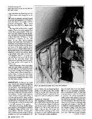
I read somewhere that Panavision now has a 70mm camera quiet enough for use on a set.
TH: There are cameras, and they're used in process photography in all kinds of ways, but they're not usually used for principal photography. There hasn't been any show shot in it. Maybe someday.
The other 80% are shot with a cropped negative. That is, the actual negative area on the film is approximately 1.33-to-1.
They just leave off the top and the bottom, and there's a line in the view finder to show where the 1.85 frame is. So the cameraman composes for the 1.85 frame. In any case, there's nothing special done about that. The projector in the theater can be framed up and down, and you'll see the ceiling and the boom and some of the lights, possibly. Some directors print a simple black matte in the top and bottom, so if the theater mis-frames it, it will be very obvious. That's a big debate. And when you blow up 1.85 negatives, like ET, to 70-mil, you can only blow them up to 1.85. So they don't fill the 2.2-to-one frame. And because you're blowing them up further, the image quality is not as good as the 1.85 to one.
With Cinemascope, there's more glass, there are more lenses, and there's a little more difficulty. If you pull focus from foreground to background, things seem to change aspect ratios because there's stuff in there. So there are some drawbacks to the Cinemascope, but it gives so much more negative area that it is in fact the better process.
DIRECTIVITY. So that got us reverb time, reverb time flatness, background noise, spatialization. Then we come to the next factor: what should the Q of the loudspeaker be, what should its directivity be? The simple-minded theory is that you want to basically direct the sound at the audience. You don't want to put excesses of sound energy on the ceiling, on the back wall, because it's likely to return to them later and cause echoes or add to reverberation. So basically, you use a Q of a loudspeaker so that the audience lies in the 6dB contours of the speaker.
Now that's one theory. Another theory goes directly to the problem of amateur loudspeaker design, and that is the “two-way problem.” And the “two-way problem” is that if you put a crossover at say, 1,500Hz, in a two-way loudspeaker, 10" [woofer] and a 1" dome, you can design that loudspeaker to be flat on axis. The trouble is that in the far field, when you start considering the power response for the long term, what you will get is a rolloff.
Including all reflections?
TH: Including all reflections, you will get a rolloff at the top end of the woofer due to its directivity collapse. It will cross over to the tweeter, going wide. So you design it for flat on axis, and you can make it flat on axis, but it's got this rolloff and then opening up that causes a hump in its curve. And it is quite audible. It does have a little coloration.
Aha, I've heard that in my own design!
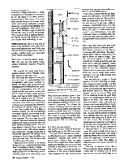
THIELE/SMALL. Now, if you look at some of the ingredient parts, what were these developments we used? Well, one was the Thiele/Small parameters that all speaker builders today are using and pretty much understand.
That's how I'm learning speaker design.
TH: Did you use the LEAP (Loudspeaker Enclosure Analysis Program) program?
The program I'm using came from a Speaker Builder article. (Thanks, Reid—The check's in the mail—Ed.)
TH: Of course the influence they had was not only in understanding how loudspeakers and boxes worked together, but then really going back and redesigning the loudspeakers for particular box configurations. And what we found was that you need a certain cone area to reach a certain sound pressure level. And that is rather equal to what the A4 is, which is two 15" drivers.
Now you think about which ways you can orient those. Well, if you stack them vertically and you match the directivity at crossover, by which I mean you use a horn that's wider than it is high in radiation pattern, you can do something very nifty, which is, you can beg the difference on this power response versus axial response. You can make the axial response right and, because the radiation patterns are equal at crossover, they will have smooth constant power. This is a long debate I had with Peter Snell and others back in the 1970s about which is more important: the axial sound field or the power response? The system we're working on kind of begs the difference. You just make them both the same, and you don't have the issue.
There are some reasons to do coaxial designs, but no coaxial design has really done everything properly, I think.
The high frequencies need to be handled by horns for the directivity control, and they need to be rather large ones.
They must have mouths about a yard square. Anything smaller, like foot-high types, have a terrible problem since they can't maintain uniformity down to the crossover frequency. You choose the crossover frequency based on where the directivity patterns match and where the drivers can handle the power. That gives you one of the constraints of how big the horn must be to keep the pattern controlled down to that frequency. So all the horns used in THX are rather big.
Is it just a two-way system?
TH: It is two-way. I looked at three-way and decided not to, but I'll cometo that.
The type of horn used is a new style—as of the last ten years—called “constant directivity” because they really are much more uniform than the older horns. The straight axial horns, used by Klipsch for example, can be more or less constant in one plane, horizontally, but they will collapse vertically across frequencies. So they have a strong change with frequency in the vertical plane where as they can stay reasonably constant in the horizontal plane.
That's the problem with the old fashioned, pre-1940 horns, the multi-celled ones invented for the A4. The problem with the multi-cell is that although it's the first attempt to get more uniform coverage, it has terrible lows. So if you put up pink noise and walk around the room, you get a “wish-woosh-wish-woosh” … very obvious holes. I was able to measure that in a dubbing stage and confirmed that what you hear is there. It's quite clear there are holes in the pattern.
What is the name of the curve used in the throat of the constant directivity horn?
TH: Various manufacturers use different techniques. JBL calls theirs “bi-radial.” I don't know what EV calls theirs. But they're based on several things. They join two horns together, in effect. One controls the vertical directivity, and that feeds into a slot-type radiator, which then forms what's called a diffraction horn to set the horizontal pattern. There's a kind of joint there. And I don't know any way to design those mathematically. You just duke around with 'em till they work.
You are splicing a couple of things together. So that's definitely an ingredient. Someone tried to apply it to film sound before, but it had been done so poorly, and in such bad demonstrations, that nobody believed it. They blew out peoples' ears in the demos. They tried it at the Academy. It was not good. Then there's the compression driver on the back of the horn. The Altec 288 is a venerable device—with a phenolic diaphragm which was susceptible to breaking, and was chopped off at about 8kHz (at 24dB per octave). Some research—I think it was done by Howard Durbin at JBL—showed that the reason it chopped off so abruptly at 8k was the fact that the surround was going out of phase with the main dome. The surround has a significant area which also feeds right into the slot. So it was notching by virtue of that feature. So JBL got a patent on a diamond-kind of pyramidal-surround that does, in fact, not go out of phase at high frequencies, and doesn't suffer the abrupt chop that the others do. Then the diaphragm material became important about 1980. The ability to whip titanium into domes was new at that time.
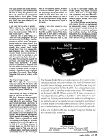
It still looks like the same ol' speaker.
TH: It's different. It's a very cleaned up version of the Western Electric, I don't know the model number. I'll bet it's in here (Grabs book 1) … 1938!
This has a lot of great things in it. There are whole paragraphs in here you can lift out and put in today's manuals, and they're still not done. Like projectionists riding the volume control. You know, complete no-no … the movie's already been mixed. (Leafs further through book ) There it is. Lansing 285, high-frequency unit, 1938, showing a two-mil Dural—durable aluminum—2 mils thick, radial slot openings, a voice coil. Of course they had a field coil they didn't have permanent magnets! Oh my God! Look what they were concerned with. “Directivity. A certain amount of directivity is required since the best illusion is obtained if the ratio of direct to reflected sound is as high as possible.” (Snaps book closed.) 1938! Still true today. Oh my gosh, I keep finding things like that, gems of wisdom in this book.
They keep proving you right.
TH: That's right, the ancients have stolen my wisdom! No, the fact is what we're doing here is very much rooted in the history of how things ought to be. It's simply been greatly cleaned up.
You're proving the theory of things they came up with over 50 years ago.
TH: Yeah. Frequency range extended, amplitude capacity extended. But it really falls in the same tradition. These guys would understand it perfectly. So now you've got a low-frequency system, a high-frequency compression driver and a horn, and you look at it and you think, maybe a three-way would be a good idea, simply for power handling if nothing else. But the titanium, although falling off, does fall off smoothly into the top octave. There's a problem of where you're going to line things up. You have a speaker and you put a microphone out in front of it, and if you measure its acoustic phase you can find where its acoustic center is. That turns out to be a different place—electrically, measured acoustically—than it is for vertical pattern or for horizontal pattern. All three of those are different points. So where are you going to line up the tweeter… on which of those three? You want it to speak at the same instant. You want it to have the same source with all the rays going out from the same point. It gets to be tricky.
Adding a third driver creates too many variables?
TH: Well, it's not impossible, but it's difficult for a another reason. These horns that have to have about a yard-square mouth are about 40-45" long. Now if you set them where you want to, that is, on top of the woofer cabinet, the woofer speaks well before the horn tweeter. And even if we align things with equalization of the time difference, 1.9ms, or so, you'll have noticeable radiation pattern changes, and it won't pass the 1938 test.
One of the 1938 tests was tap dancing, with Eleanor Powell. On (reproducing) tap dancing they heard “ta-thunk, ta-thunk, ta-thunk,” instead of one hit. So they slid the horn in and out and found they could have less than 2ms of delay between the two. Paul Klipsch repeated this in the 1960s and claimed he couldn't find it. But he's wrong. He's just wrong.
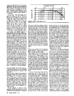
So you say, “The first thing we're gonna do is delay the woofers.” Now the first job of the crossover is to delay the woofers by 1.9ms. And we do that with a delay line of all-pass filters. Now if we do that with a delay line of all-pass filters, and we have a tweeter somewhere up top that is going to speak sooner than the midrange, we're going to have to delay the tweeter as well. It turns out you can delay bass a lot more easily than you can delay high treble.
I did look at the thing being a three-way system and decided against it, basically because of moving a delay line. I've got a delay line in there now that goes up to 500Hz and takes up to three op-amp sections to do it. If that delay line had to be extended to 5kHz it would be much more complicated and I'd have 15 sections, be less reliable, and all that stuff. Otherwise, you would have to go with a digital converter and an actual time delay or something to get it. So that's another reason not to use a three-way. So we chose not to because, yes the response is falling off, but—and this is an important point for amateurs—every real commercial loudspeaker has the crossover network designed for the specific drivers, in two ways. One, with the driver as its terminal impedance, instead of with a resistor. The most common fault of amateur designs is that they don't take into account the impedance of the driver. They just calculate something out of a book for an 8Ω resistive load. And that's way too simplified. That's the first problem, I would say, of amateur designs.
In my own design I used a stock crossover. That is likely the cause of a lot of the strange coloring. Knowing this, I'm going to tear back into it.
TH: You have to start by measuring the terminal voltages with crossover in place and taking a lot of acoustic measurements. So that's the second part. This is the way THX was designed. You start by measuring the drivers. You find out their acoustic transfer function. Then you determine what target transfer function you want for the whole system. Then the crossover makes up the difference between the two.
So, for example, we wanted a Linkwitz-Riley fourth order alignment for all its known good properties. It's because of the way in which we rank the relative importance of the various things that the crossover does that we say the fourth order Linkwitz-Riley is best for our purposes. First-order crossovers are hopeless because they have bad radiation pattern tilts, a very strong positive-going lobe and very bad notches. Which means that as you move up and down with respect to that loudspeaker—as you move up and down the auditorium—you get quite different transfer functions in the crossover region. That's not good. Linkwitz-Riley, with its one principal lobe on axis and two very minor lobes off, is the best in lobing behavior if you can't have a coincident driver.
There was an extensive article in Speaker Builder (1/85 ) on crossovers and lobe patterns. I'll have to read it again.
TH: (Laughs) Good! You measure the woofers and you say you want this kind of a response to be Linkwitz-Riley. Acoustical Linkwitz-Riley, not electrical.2,3 But overall, acoustical. Then you determine what poles and zeros you need in the electrical domain to add up with the drivers to make the final response. Siegfried Linkwitz doesn't say that anything that's called Linkwitz-Riley is Linkwitz-Riley. Because electrically they (may be) Linkwitz-Riley, but unless you know what the acoustic transfer function is, you don't know.
And you do the same thing with the compression driver. The one for the woofer turns out to be pretty simple. It's a couple-pole high pass (-1dB at 40Hz) to prevent overload at very low frequencies. It has quite a flat passband and then it's a four-pole rolloff, as you would expect, because the woofers go quite a bit past the 500Hz crossover frequency. On the other hand, the compression driver is kind of close to the 500Hz limit. It's rolling off itself. So that, more or less, forms one pole of response so that the high-pass is three-pole electrically, and becomes four-pole when you add in the acoustic transfer function. So, you get two four-pole-squared Butterworth response that is Linkwitz-Riley, and it works out for all the good reasons. Then you come up to a kind of plateau where we find that the horn is about 10.5dB more sensitive than the woofers, so you can set it down by that amount. Then we have a whole bunch of things going at high frequencies. For one, the compression driver is rolling off because of air trapped between the diaphragm and the phasing plug, having to squeeze the air in and out. Another reason is the moving mass. Yet another reason is that the inductance just doesn't allow the current to be usable at very high frequencies. So there are a bunch of reasons why it rolls off.
Number two, we hang a motion picture screen in front of it. And a motion picture screen with its perforations is a one-pole low-pass, RC and just 6dB per octave, located between about 5kHz and about 8.5kHz, depending on the screen, its thickness and perforations and such. So there's one factor to account for.
All of these things contribute to some kind of high-frequency rolloff which we compensate for electrically. And there's a fourth consideration, which is that there's an international standard on what we ought to measure in the far field. There's no standard on what a home ought to be, except people would probably go for flat when they measure things. But in a motion picture theater it's well known that if you make things perfectly flat-on pink noise, say—then all program material appears to be too bright. So it all has this standard curve, ISO 2969, Curve X, which is a Dolby-promulgated standard (Fig. 3). It is flat to 2kHz, and it's down 1dB per third octave beyond there. It's a standardized house curve. It's -6 at 8k. And it tips up and down some with room volume. There's a room volume correction in it, based on an average room.
We took an empirical approach. We designed a crossover so the speaker would be flat. And then we hung a screen in front of it which we knew would roll off the highs. Then we corrected the network to get it down to the standard. So we can be, on the average, on the ISO standard.
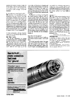
TH: No it isn't. It's been listened to and monitored over an X-curve. So it has some degree of built-in boost. It won't be as much as 6 or 7dB at 10k. That's too much. If you play back a CD in a motion picture house, or in a dubbing theater, you have to brighten up the highs to work against the X curve rolloff. But it's like a standardized de-emphasis like RIAA or NAB. It's the same kind of idea except that it's electro-acoustic. And if everybody is using it, then it's all translatable.
It's done acoustically, with the crossover, instead of e. g. , the playback EQ electronics of a tape machine.
TH: Right, exactly.
We get the ingredients by looking around manufacturers' catalogs and picking what we think are the best available. The ones that have been made to the Linkwitz-Riley network. The ones that will give us actual chamber curves, and such. And we send them up to the
University of Waterloo in Canada and start taking measurements. We put the speaker on the edge of the stage, as it would be in a movie theater, and we raise and lower the pit to see the effect of the first reflection off the floor, and all kinds of things.
We discover we can't get anything like the rated frequency response with the woofer system. There are many phone calls back and forth, and we look at the manufacturer's data and we sort out how it was made. We discover that Linkwitz-Riley all depends on a 2 pi environment. It's not for 4 pi. It's for half space. And so we look at the woofer on its back on the stage floor and hang a microphone up in the air. And sure enough, we get the Roy Allison famous classical dip caused by the reflection off the boundary behind it.
How deep was the speaker?
TH: About two feet. It's down maybe an octave from a home speaker, but it's still there.
So we tip it up on the edge of the stage and we put boards all around it, build a wall all around it and discover, sure enough, the bass comes up quite a lot, as you'd expect. And subsequently, when you install it in a dubbing stage here in Hollywood, when you interrupt this wall diaphragm and put two A4 bins on either side and two bass bins on either side of the woofer section, you lose 15dB at 100Hz.
You lose…?
TH: Yup. 15dB worth of loading. You'd think it'd be only six or something. But it was a huge notch at a hundred. So the walls are a very important ingredient of the system, because it makes the bass smoother, it eliminates any Allison interactions with the environment because you've flush-mounted everything. You have only beneficial reflections from the local environment (Fig. 2 ). Then it performs like it's supposed to, as its design standards and Thiele/Small tell you it's supposed to be.
(Continued in our next issue.)
Photo 1: Tom Holman, corporate technical director for Lucasfilm, Ltd., and assistant professor at USC's School of Cinema-Television.
Photo 2: Dubbers, USC film lab.
Photo 3: Dolby decoders.
Photo 4: Dolby CP-200.
Photo 5a: First THX installation showing former placement of speakers behind screen.
Figure 1: Comparison of different aspect ratios and THX speaker placement.
Photo 5b: Behind-the-screen view of first THX installation.
Figure 2: Side view of the THX baffle. Re-drawn from THX…Instruction Manual….4
Figure 3: Graph of ISO 2969, curve X.
REFERENCES
1. Academy of Motion Picture Arts and Sciences, Motion Picture Sound Engineering , New York: D. van Nostrand, 1938.
2. Linkwitz, Siegfried H., “A Three-Enclosure Loudspeaker System: Part III,” SB 4/80, pp. 14-19, 22-24, 30.
3. Linkwitz, Siegfried H., “Active Crossover Networks for Non-Coincident Drivers,” JAES, Vol. 24, January 1976, p. 2.
4. Holman, Tomlinson, THX Sound System Instruction Manual: Architect's and Engineer's Edition, Fourth Edition, Theatre Operations, a division of Lucasfilm Ltd., October 1987, p.15.